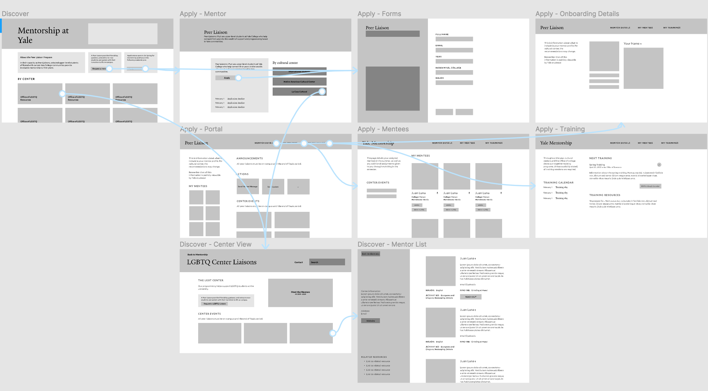
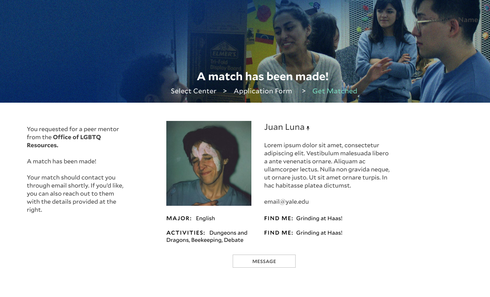
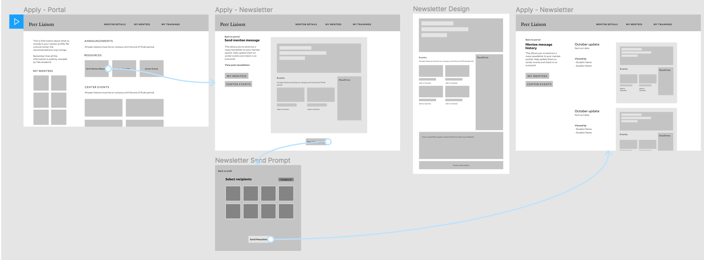
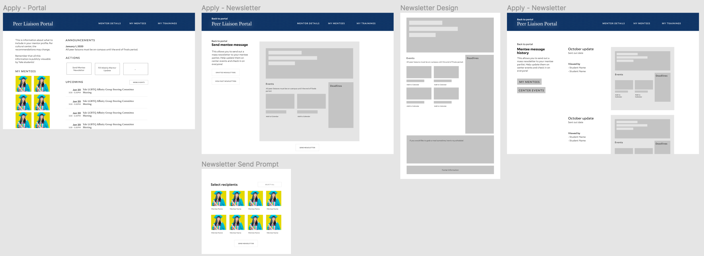
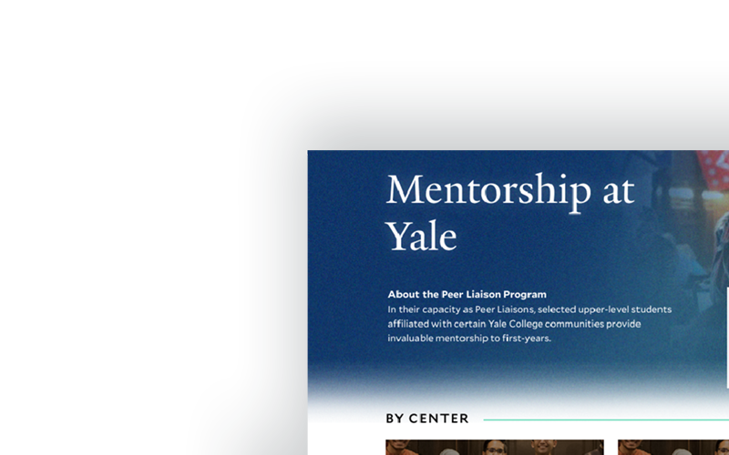

Context
Strengthening community through measurable mentorship
Brief
Prompted to strengthen community through mentorship programming, I was tasked to design an experience that allows mentors and mentees to discover one another.
Even before entering Yale, students are given a wealth of resources: their residential college (future housing), upper-year mentors, and resident counselors that all form a distinctive part of their first-year experience: academically, culturally, and socially - especially in the overwhelming fall.
Challenge
Navigating a wealth of resources can easily be overwhelming to navigate for first-years – and difficult to coordinate for upper-years: how can students maximize on these engagements and know when to access which resource?
Building on existing infrastructure, I wanted to create an experience serving both mentors and mentees– bringing new opportunities for Yalies to connect that reflect the diversity of the student body.
Research
I talked to current first-years and Yale campus life leads to see what mentorship-based transitional resources exist, and what might be lacking from each.
| Freshman Counselors (FroCo) | Peer Liaison Program | Dean/Head of College |
|---|---|---|
| Lives with first-years, mentors are seniors -- rigorous program; work collectively, each 9-10 students per college 100-150 | Upper-level students (sophomores - seniors); regulated per cultural center, and 0-2 per residential college | Direct connection to administrative and residential college support |
| Chosen for diverse range of experiences, particularly overcoming academic/personal struggles | Chosen for to existing cultural centers, international student community, Chaplain’s Office, or LGBTQ community | Acts as academic and personal adviser; lives in residential college (where most first-years do not live yet) |
| Runs structured programs at the start of the year, later on ad hoc work and focused on "duty hours" at nights | Chosen for diversity in major, background, experience | Helps facilitate peer mentorship programs, particularly with freshman counselors |
Decision: Focusing on affiliated mentorship
"I want the opportunity to explore all my identities, but sometimes [the PL program] felt disjoint and overwhelming."
From this, I decided on an experience that put these programs together on the onboarding end made it easier for peer liaisons—thanks to their less rigid structure and connection with cultural centers.
After deciding to target the peer liaison program, I continued short talks with first and second-years as well as current and alumni PLs and a now-alumni freshman counselor to synthesize their expectations and perceptions about current programs.
Peer liaison mentorship largely supports minority students: 71% of minority students in each class express interest in mentorship from their identity groups; yet significantly lower amounts actually engage. As a goal, I wanted to not only make the process more breathable and accessible, I also wanted to uplift the influence and impact of cultural centers in the development of new students.
Pain Points
- Managing student demand
With increasing class sizes, it's harder for mentors to keep up with demand: handling 10+ mentees. The lack of clarity in the mentor onboarding process is also frustrating and turns away potential applicants. - Lack of coordination between mentorship programs and centers.
Mentors are sometimes confused about their scope of work, and mentees develop relationships with less depth with the lack of clarity in action. This actually harms the diversity on-campus since programs are disjoint—they don't reflect the students wholly! - Communication breakdowns.
Mentee needs are unpredictable and mentors need to keep up heavy workloads while communicating check-ins and reminders to mentees. Without existing infrastructure, how can we build a grounds for sharing info to mentees?
Personas
I developed lean personas to synthesize the uncovered motivations and desires for the two end users of the program & experience: the mentors, and mentees:
| Mentor: John | Mentee: Lawrence |
|---|---|
| Wants to spread their love for Yale and cultural center community and give back while taking rigorous courses | Navigating adjustment to college, wants opportunities to socialize throughout the year as they navigate social circles |
| Familiar with Yale systems, materials, and terminology | Often sure about expectations or needs, might scramble to look for last-minute help and not entirely comfortable with administrators/faculty yet |
| Needs support coordinating with 10+ students, prefers to meet students in groups; and in finding resources and events to help direct diverse groups of mentees centered around identity | Wants to get questions about academics, social life, etc. answered in a way comfortable to them |
| Main communication channel with mentees is usually through email, so easy to lose track of connections | Secondary support system after their freshman counselor—going to PL for non-immediate concerns: such as specific-major questions, cultural center/extracurricular advice, and the like |
Process
For the exercise, I decided to rehaul the mentorship experience for the web. Students will be accessing these mentorship portals before arriving at school: I conducted look-and-learn sessions to see how students discovered info about their liaisons and went in contact with them. With the amount of thought/information on the project, the web was most intuitive for these longer onboarding experiences when settling key school flows.
From here on, I began building mockups and going through cycles of product solutions to validate my assumptions.
Project Area Identification
From initial research, I narrowed down the current mentor-mentee program experience to three areas. These areas built upon conversation from our undergraduates will serve as our proposal's initial framework.
- Mentor Onboarding
How can experienced Yale students best be informed and be ready to with the resources to guide first-years?
The clarification of the liaison application process, as well as consolidation of training deadlines and information. - Discovery & Connection
How can community-affiliated liaisons best be matched with students to build fruitful relationships? - Communication
How can we prevent communication breakdowns and make it easier for mentors and mentees to reach each other throughout the academic year?
Design Audit & Component Library
Before working on mockups, I took to Yale's existing application forms and tools for the layout and for later high-fidelity conversions. Luckily, a semester working as a designer-developer at the Yale University Art Gallery made me familiar with university style guides and practices.
Because I'm taking on the task of creating cohesion for the liaison program, I wanted to continue building off the university's present systems. I reused components and titling through a small system on Figma.
Project Area: Onboarding
Clarifying the mentor onboarding process
Since these mentorship programs at Yale are given significant institutional backing, application processes are intensive and rigorous. I wanted to keep the nature and support of the program, streamlining it so users could explore things more.
I tested and iterated drafts for the new web views, all in Yale's style.
HIGHLIGHTING THE PEER LIAISON PROGRAM
I redesigned the portal for mentorship at Yale to highlight the cultural centers and diversity offered on-campus. Previously, everything was stuck in one page with little info: centers linked to individual websites, some outdated and with inconsistent info. Information sessions and PL-wide events can also be disseminated in the new landing.
A new mentorship landing
The new flow is a cohesive display of each affinity center's offerings: giving potential mentors and mentees a better sense of what programming they'll be able to closely engage in. Previously, there was no information on PL programs per center even though they vary greatly.
A new view standardizes liaison info per center.
Feature: Peer Liaison Application & Portal
Based on feedback from Peer Liaisons, I wanted to consolidate mentor application to management with the amount of preparation and trainings needed—I designed a new portal for mentors to receive and manage information about their mentees, track trainings, access resources, and more. Previously, these were only disseminated through email!
Mentor Onboarding
The portal lets mentors access materials they need and reference new mentees. As the academic year goes on, mentors will move away from informational use to performing actions: sending reports back to the center, viewing program announcements & their history, and the like.
From application to being bombarded with a near-dozen mentee assignments in the middle of summer, mentors are now able to easily access all requirements and details so they can focus on sharing their wisdom and maximizing interactions with their mentees.
Building on cohesion, I created a view templating mentor information for all or a certain center. These choices helped emphasize the joint nature of each program.
Project Area: Discovery & Connection
Connecting mentors and mentees with the information to succeed
At core: new students have unpredictable needs, and should be able to smoothly access existing support systems as needed. Mentor assignments are only done one-time in the summer; students can fall under more than one cultural center (like me); and emails at the start of a new school year are not the best way to communicate.
I thought it was critical to emphasize how students can request for a mentor—if not already reaching out to one they find on a list.
With this, I developed a user flow for the mentor request process, along with a better request journey to help students communicate their needs and wants. This clarity in the mentorship process is key to productive relationships on both end, and helps students who communicate better in other means.
Because of the current matching system (administered by each cultural center), I stuck to single center selection ("Select a center")—but future systems could allow for requests from several centers at once.
After a few days, prospective mentees should receive details on their match back on the site.
Updated Request Form
In the request form, I opted for a more extensive application form where participants can articulate needs, interests, and goals for closer mentor matching. Fruitful relationships start with ones that engage with one another—these details, when also communicated to the mentor, help them better assess how they can help mentees and how to direct them to the appropriate resources.

I built a view for mentors to view each of their mentees' profiles. Think: notes left from the dean, changing ideas of success, an understanding of different communication methods, and helpful photos since names are easy to forget.
Mentorship is a two-way street. With these systems, there are more pathways to communicate expectations and measurements of success—enabling both users to meet each other's desires.
Project Area: Communication & Engagement
Bridging communication breakdowns
As a bonus: I wanted to investigate how mentors and mentees communicate. How can we make it easier for mentors to reach out to groups of mentees and align them with the right resources and opportunities? How can we provide communication channels for mentees to reach out?
MENTEE MESSAGES
Throughout ideation: it was clear the consistent communication channel was email. This becomes difficult when mentors have to keep track of over a handful of students consistently. I proposed a sort of blue sky system where mentors can put together mentee announcements with ease; embedding events and other opportunities that they normally deliver.
I proposed an addition to the portal where mentors can send out a "newsletter" to their mentees.
I didn't go too in-depth on the design for the newsletter: there are existing systems for them, and I would just imagine these are standardized to some extent. The portal's collection of resources and upcoming center events, plus likely announcements and reminders from cultural centers on news to disseminate will help mentors reach out.
These mentee newsletters also give the opportunity for group meetings and events beyond one-on-one meetups: when mentors put out gatherings, they can see student responses.
- Consistent Communication: Offers group events, opportunities, and guidance; accessible to students at any time of the academic year and sustains written engagement.
- Cultural Center Connections: Forwards information and programming specific to each cultural center, encouraging engagement.
- Centralize event planning: With the portal offering consolidated information on center activities, this is a perfect way for different mentors to coordinate one another and ease work—while letting first-years expand their networks!
Next Steps
Infrastructure as the center for human connection
The project was reflective: there's no point in offering resources when they're difficult to navigate and disjoint – uncovering these breakdowns in the mentorship system helped me understand how to better bridge relationships. Tackling mentorship at Yale is significant: every student wants to give back, and we're fortunate to have existing resources. At the same time, there's so much room for improvement.
Building on existing infrastructures and systems to make cohesive processes is critical. I stuck to principles of clarity, empathy, and "capacity" in this project: I wanted to maximize the potential of productive, meaningful human interaction while under university constraints, tackling consistency fixes to trying out a blue sky approach. These new flows center community. These interactions are not just between mentor and mentee, they are between the systems that Yale provides and challenge all participants to partake in a larger ecosystem.
For next steps, discussion with cultural centers and implementing bodies would be key. I talked to mostly mentors and mentees and was able to define a product that tackled communication & discovery issues—but I want to see what tangible parts of the process can lead to more measurable support for cultural centers, especially with inter-center programming.
